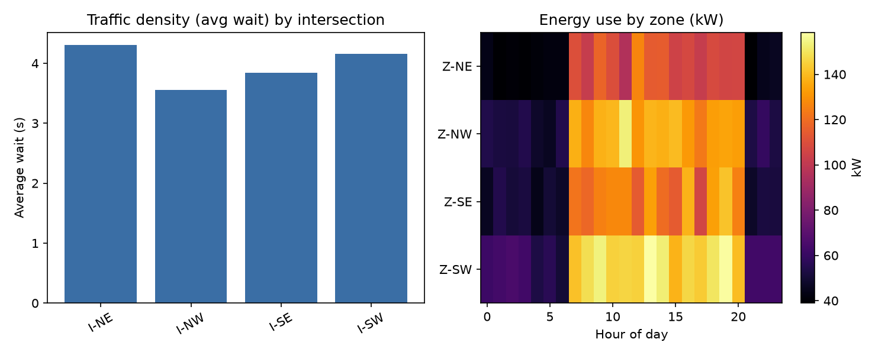
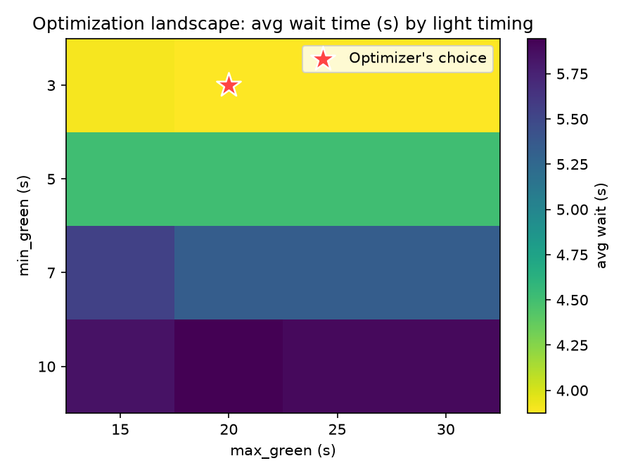
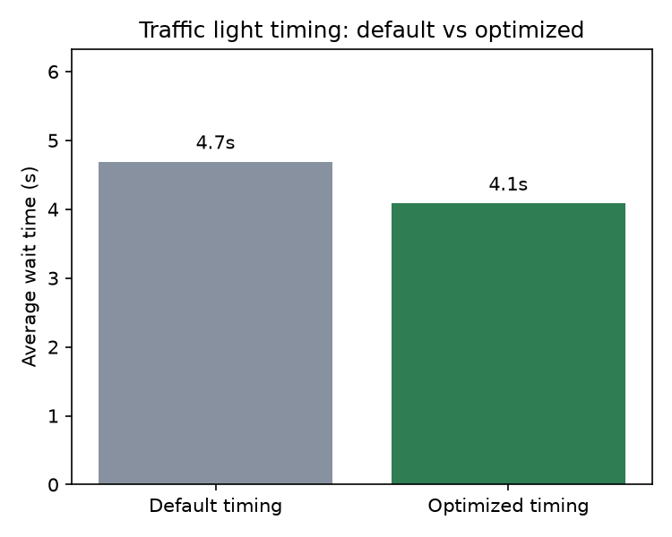
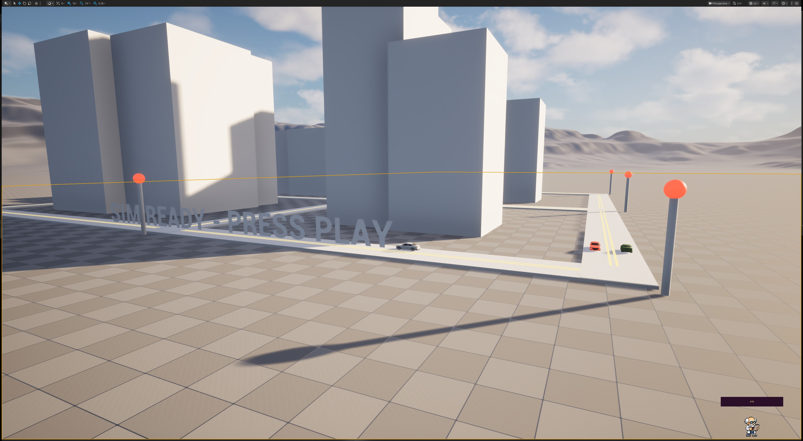
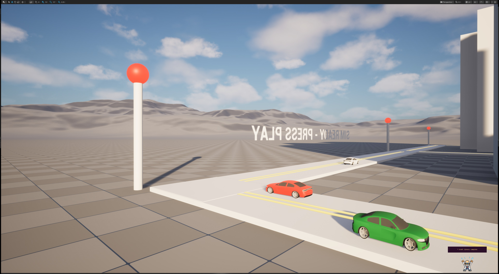
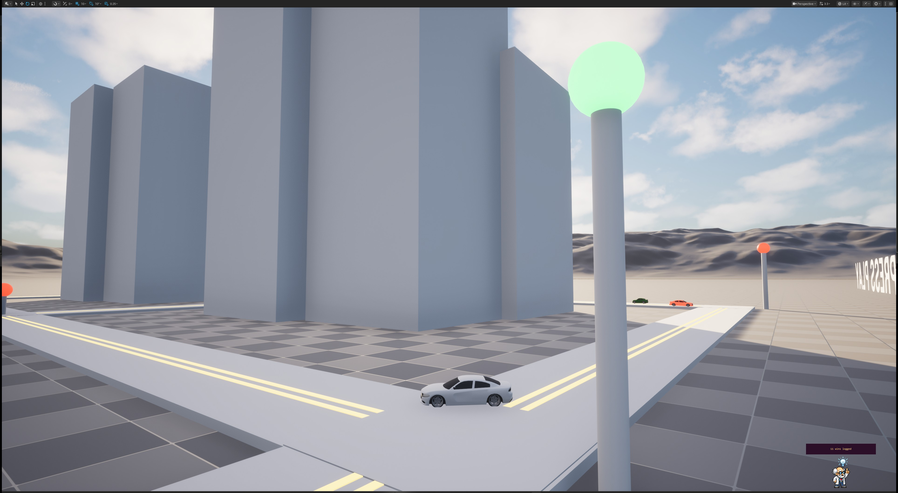
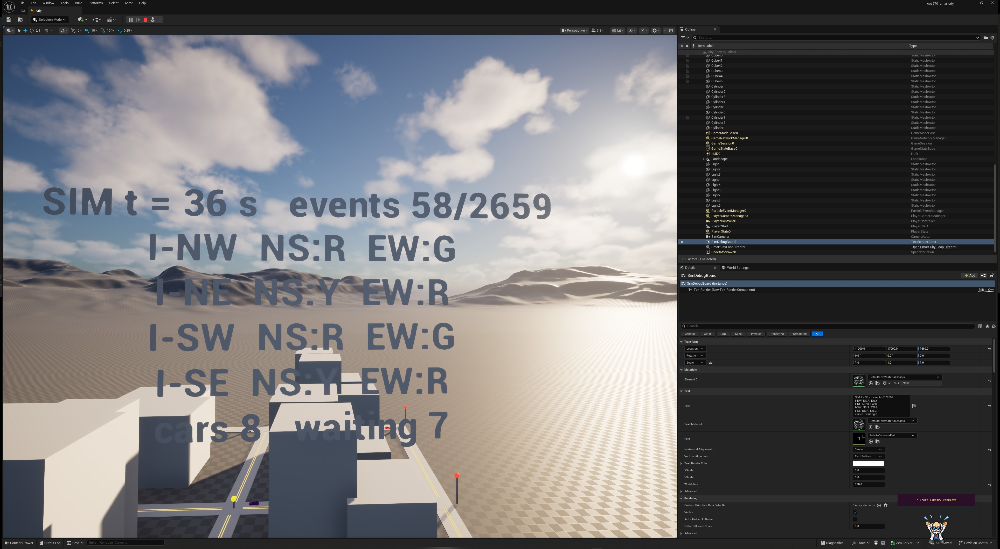

Advanced AI / systems simulation / Unreal study
Smart-City Traffic + Energy Simulation
A decision system that learns traffic-light timing from simulation data, measures the tradeoff between wait time and energy demand, and replays the result as a living 3D city.
- 12.9%
- wait-time improvement
- 46.48
- cars released / minute
- 97.6%
- delivered energy ratio
- 1.000
- decision-tree R2
The project
One logged system, three ways to see it.
The simulation models four intersections and four energy zones. Python runs the discrete-event world, trains the optimizer, and writes the evidence. AngelScript carries the data and loop concepts toward Unreal. Three.js gives the result a direct, inspectable replay surface.
The browser viewer is deliberately a replay, not a second simulation. It consumes the same logged output that produced the charts.
Observed results
Optimization with a visible trail.
The numbers below come from the verified run packaged with this showcase.



Interactive artifact
Replay the optimized city.
Orbit the city, watch the signal states change, and follow the released vehicles. The viewer reads `data/light_schedule.json` and does not invent a new result.
Unreal evidence
The same idea in a world view.
A captured project view accompanies the academic and simulation evidence.
Evidence wall
From code output to scene proof.




Implementation
Python for the model. AngelScript for the bridge.
Simulate, optimize, measure.
The Python layer owns city layout, traffic arrivals, light control, energy demand, parameter sweeps, metrics, and the JSON replay contract.
View Python filesCarry the system into Unreal.
Small Unreal-facing examples describe the data profile and loop director without exposing the private Unreal project or its content assets.
View AngelScript filesMake the evidence inspectable.
The viewer is a transparent presentation layer over recorded simulation output, built for direct inspection in a browser.
Open the viewerPublic boundary
A portfolio window, not the whole workshop.
The Unreal project, maps, cooked content, private plugins, and internal AYO infrastructure remain outside this public artifact. This page shows the reasoning, evidence, and result without handing over the production project.
Read the signature article